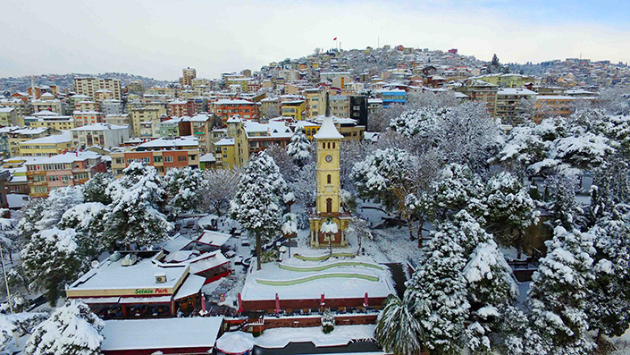
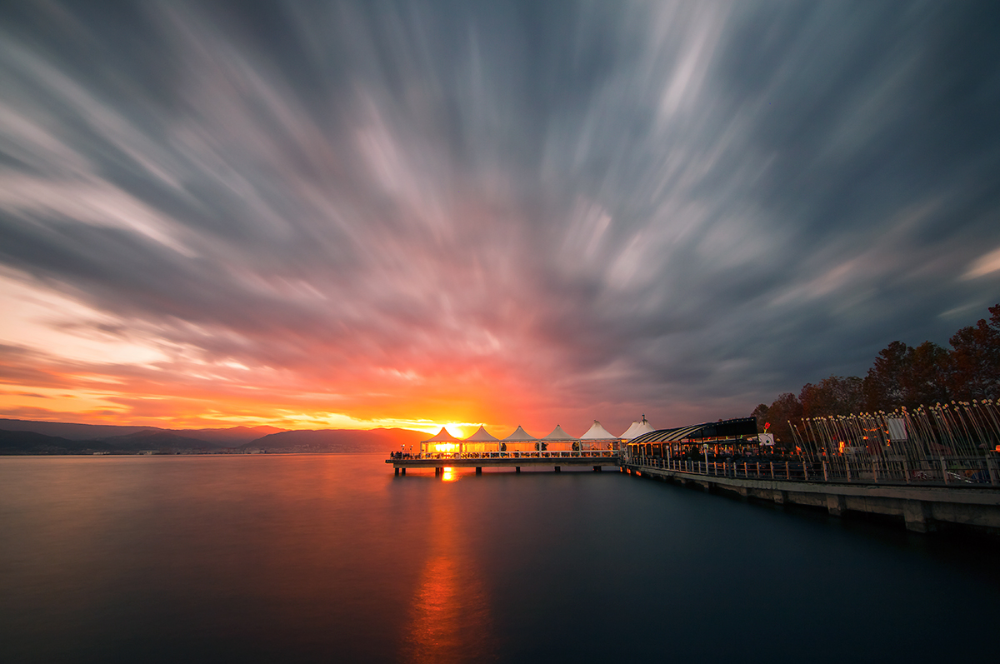
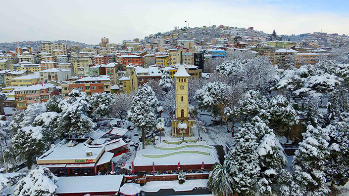
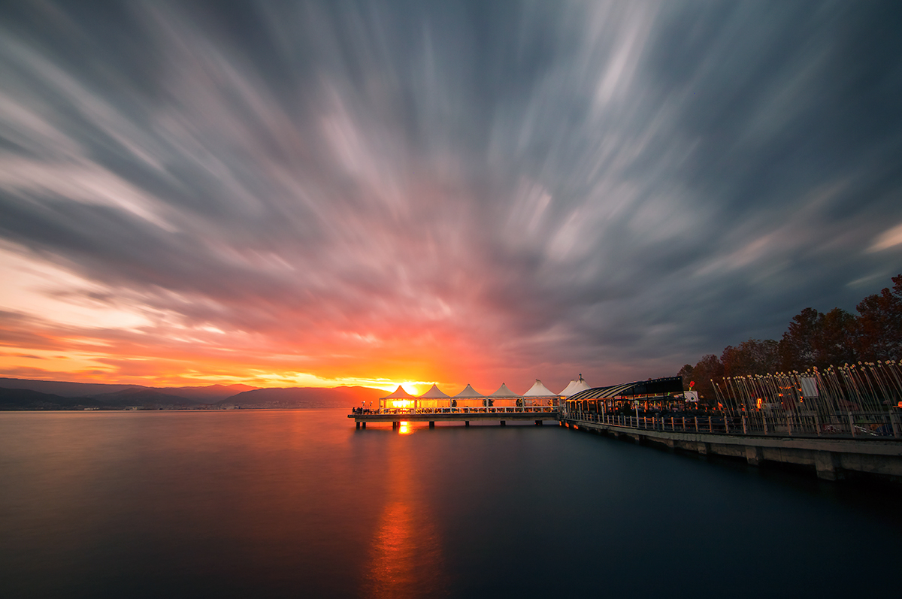
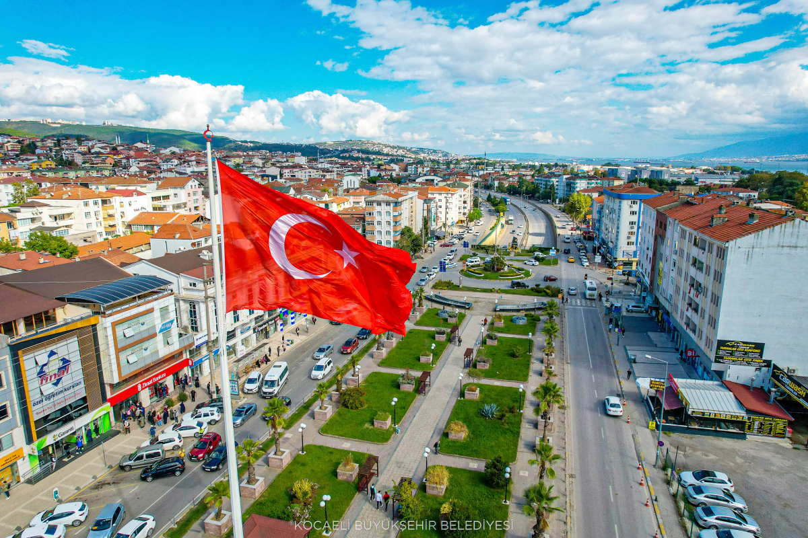
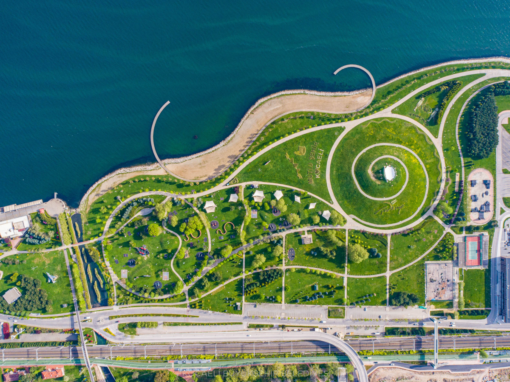
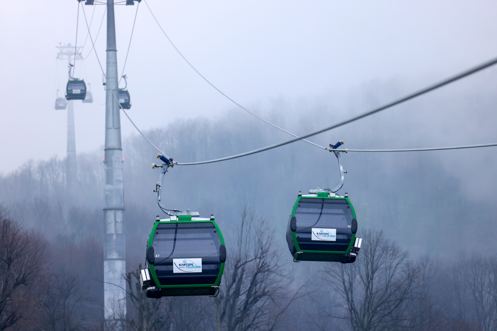
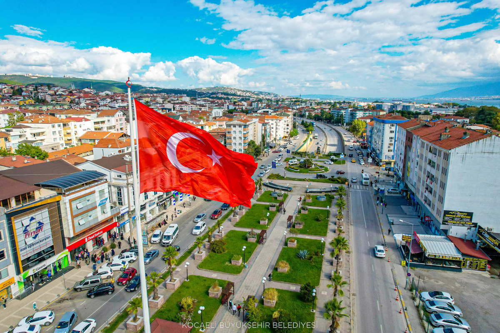
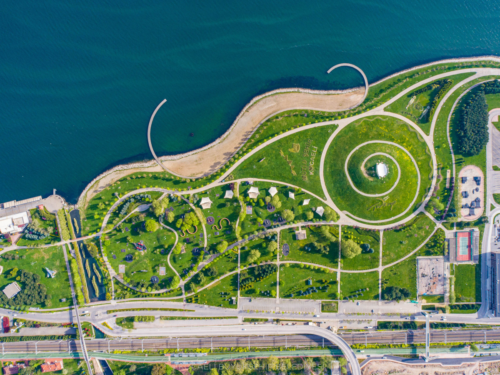
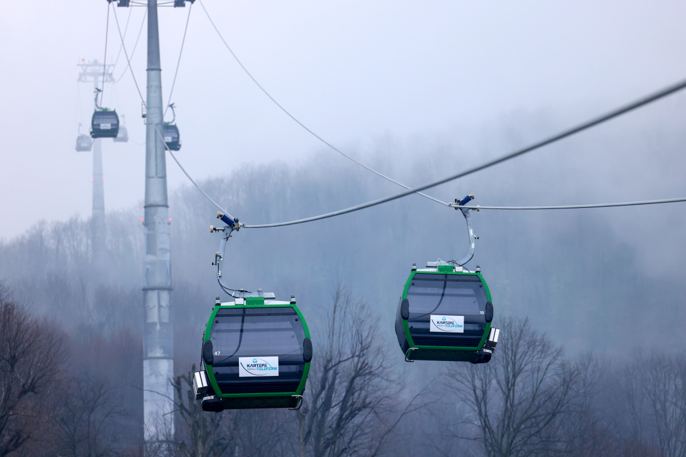

Kocaeli; Asya ve Avrupa’yı birbirine bağlayan yolların kavşağında bulunan Marmara Denizi’nin ve Marmara Bölgesi’nin doğusunda yer alan bir İl’dir. Kuzeyde Karadeniz, doğuda ve güneydoğuda Sakarya, güneyde Bursa batıda Yalova ve İstanbul illeri yer almaktadır. 1’i Büyükşehir Belediyesi ve İzmit, Derince, Körfez, Gebze, Gölcük, Karamürsel, Kandıra, Başiskele, Kartepe, Çayırova, Darıca, Dilovası 12 İlçe Belediyesi olmak üzere toplam 13 Belediyesi bulunmaktadır.

1924 yılında vilayet olan Kocaeli 3.623 km2 alanı ile Türkiye'nin en küçük 6. İlidir.Kara, demir, deniz ve hava yolu ulaşımları ile Türkiye’nin önemli geçiş noktalarından biridir. Sanayi sektörne katkılarından doalyı "SANAYİ ŞEHRİ" , İki üniversitesi, TÜBİTAK – Marmara Araştırma Merkezi ve daha bir çok bililm alanındaki öncülüğü ile "BİLİM ŞEHRİ " olarakta adlandırılmaktadır.
Kocaeli , kurulan ve kuruluş çalışmaları devam eden 16 adet OSB’ si ve 4 adet teknoparkı ile Ülke Sanayi’nin Başkenti konumunda olup, Teknokent vizyonuna doğru hızla ilerlemektedir. Türk imalat sanayi üretimine yapmış olduğu yaklaşık %13’ lük üretim katkısı ile İstanbul’dan sonra gelen en büyük ili konumundadır.
Kocaeli İli, Karadeniz ve Marmara Denizi’ne olan kıyıları, İstanbul Metropolüne olan yakınlığı, tarihi eserleri, müzeleri, Mimar Sinan’ın eseri olan camileri, doğal güzellikleri, plajları, yaylaları, trekking parkurları, Sekaparkı, Kocaeli Fuarı, Uluslararası İnterteks Fuarı, Kartepe kayak merkezi, Yuvacık Barajı, mesire alanları, Sapanca Gölü, Darıca Faruk Yalçın Hayvanlar Alemi ve Botanik Bahçesi, Harikalar Sahili, Alışveriş Merkezleri, kültür merkezleri, Olimpik buz pateni salonu, Gölkayparkı, alternatif turizm çeşitlerine imkan sunan, nitelikli turizm tesisleri, sahillerinde bulunan balık lokantaları, dünyaca tanınan Hereke Halıları, kente özgü pişmaniyesi, Karamürsel sepeti, Kandıra Bezi, Çenesuyu ve bir çok kültür ve turizm değerleri ile ticaret, sanayi, bilim, kültür, turizm ve sanat açısından ayrı bir öneme sahip Marka şehirdir.
 



 





**HENDEK**